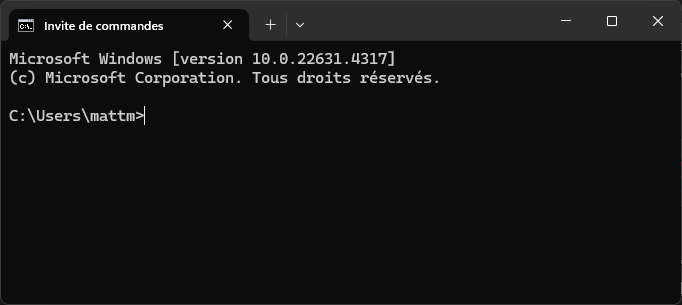
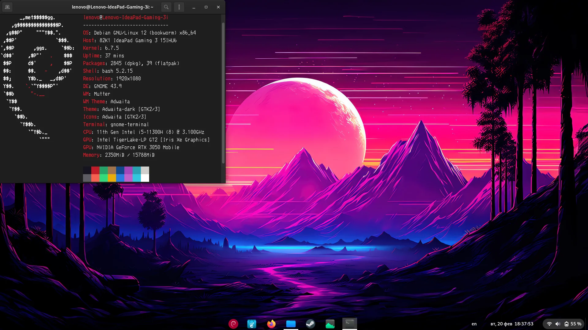

Systèmes d'exploitation
EN CONSTRUCTION
Essayer avec http://ftp.debian.org/debian/dists/stable/main/installer-amd64/current/images/netboot/mini.iso
Introduction
Un système d’exploitation est un logiciel essentiel qui gère l’ensemble des ressources d’un ordinateur (processeur, mémoire, stockage) et permet aux utilisateurs d’interagir avec la machine. Il assure le bon fonctionnement des applications, la sécurité, et la gestion efficace des tâches. Dans ce chapitre, nous aborderons ses principales fonctions et découvrirons les types de systèmes d’exploitation courants.
Démarrage de l'ordinateur:
Lorsque vous démarrez un ordinateur, son unique objectif est de charger le système d'exploitation.
Ceci peut se découper en 4 étapes:
-
Alimentation et auto-test matériel (POST) :
- L'ordinateur s'allume, et le BIOS (Basic Input/Output System) ou UEFI (Unified Extensible Firmware Interface) effectue un Power-On Self-Test (POST). Ce test vérifie les composants matériels essentiels (mémoire, processeur, carte graphique, etc.) pour s'assurer qu'ils fonctionnent correctement.
-
Chargement du BIOS/UEFI :
- Le BIOS ou UEFI initialise le matériel de base, en activant la mémoire et les périphériques nécessaires pour lancer le système d'exploitation. Il identifie également le périphérique de démarrage (disque dur, SSD, clé USB) où est installé l'OS.
-
Chargement du chargeur d'amorçage (Bootloader) :
- Une fois le périphérique de démarrage identifié, le BIOS ou UEFI passe le contrôle au chargeur d'amorçage, souvent GRUB pour Linux ou Bootmgr pour Windows. Le bootloader est un petit programme qui charge le noyau du système d'exploitation en mémoire.
-
Chargement du noyau :
- Le chargeur d'amorçage charge ensuite le noyau du système d'exploitation en mémoire et lui passe le contrôle. Le noyau initialise les fonctions essentielles : gestion de la mémoire, création de processus initiaux, et prise en charge des pilotes matériels de base.
A partir de ce moment, c'est le système d'exploitation qui va prendre la main et servir à faire le lien entre le matériel et les applications.
graph TD
A[Démarrage de l'ordinateur] --> B[POST -> Power-On Self-Test]
B --> C[Chargement du BIOS/UEFI]
C --> D[Identification du périphérique<br>de démarrage]
D --> E[Chargement du chargeur<br>d'amorçage -> Bootloader]
E --> F[Chargement du noyau<br>du système d'exploitation]A quoi sert un système d'exploitation
Visionnez cette vidéo, et résumez la en une introduction et 3 parties. Elle constitue le minimum que vous devez savoir sur les systèmes d'exploitation.
https://eylenburg.github.io/os_familytree.htm Il existe une multitude de systèmes d'exploitation, comme en témoigne la page suivante: https://eylenburg.github.io/os_familytree.htm
Interagir avec le système d'exploitation
Un système d'exploitation ne nécessite pas forcément une interface graphique avancée comme celle de Windows. Certains OS, notamment les systèmes utilisés sur des serveurs, des appareils embarqués (comme ceux dans les routeurs ou appareils industriels) ou dans des environnements professionnels, fonctionnent uniquement avec une interface en ligne de commande (CLI). Ces OS, comme certaines versions de Linux, offrent un contrôle précis des fonctions système sans nécessiter d'interface visuelle.
L'absence d'interface graphique permet souvent de réduire l'utilisation des ressources (comme la mémoire et le processeur) et d'améliorer la stabilité et la sécurité, ce qui est essentiel dans les environnements où chaque ressource est précieuse, où l'efficacité est prioritaire.
Lorsque le système d'exploitation n'a pas d'interface graphique, l'interaction se fait via une interface en ligne de commande (CLI = Command Line Interface). Dans ce type d’interface, l’utilisateur entre des commandes textuelles dans un terminal pour exécuter des actions, comme la gestion de fichiers, le contrôle des processus, ou la configuration du réseau.
L’utilisateur doit connaître des commandes spécifiques, comme celles utilisées sous Linux (par exemple, ls pour lister les fichiers, cd pour changer de répertoire, ou top pour surveiller les processus en cours). Ces commandes permettent une interaction directe avec le système, souvent de manière plus rapide et précise que par une interface graphique.
Dans un système d'exploitation avec une interface graphique avancée, il est toujours possible d'accéder au CLI via un terminal.
Par exemple pour windows:

TP Installation d'un système d'exploitation dans une machine virtuelle.
Nous allons installer un système d'exploitation basé sur le noyau linux: Alpine. Cette installation est plus technique en comparaison à une installation d'un Full Linux, qui se fait en quelques clicks avec des questions compréhensibles par le commun des mortels.
Mais: - Ca vous habitue à la ligne de commande - On voit bien toutes les étapes - Les ordinateurs du lycée ne sont pas assez puissants
Pour cette activité, il faut utiliser le moins possible de RAM. Donc on n'ouvre rien qui n'est pas en lien direct avec l'activité (genre pronote...).
Tout se fera dans le même répertoire de MSYS2
Préparation
- Tout se fait dans le même répertoire MSYS2 MINGW64 (chercher avec la loupe de windows)
- Exécutez
pacman -Syude manière répétitive jusqu'à ce que le message "there is nothing to do" apparaisse.- Ceci sert à mettre à jour MSYS2.
- Le terminal peut demander à être fermer, il faut le faire et relancer MINGW64
- Installer qemu, le gestionnaire de machines virtuelles, en exécutant cette commande:
pacman -S mingw-w64-x86_64-qemu - Télécharger le disque d'installation d'alpine:
wget https://dl-cdn.alpinelinux.org/alpine/v3.21/releases/x86_64/alpine-virt-3.21.3-x86_64.iso
-
Créer un disque dur virtuel de 5Go pour le brancher à notre PC virtuel.
qemu-img create -f qcow2 disquedur.qcow2 5G -
On démarre une machine virtuelle. Un ordinateur dans votre ordinateur. Ici on lui donne comme disque dur le disque virtuel qu'on vient de créer, on y insère le cd-rom d'installation du système d'exploitation, et on lui demande de booter sur le cdrom. On l'autorise à utiliser 512M de RAM sur la machine physique. on lui branche notre disque (hda) de 5G. Les autres options sont des options pour la gestion du réseau.
qemu-system-x86_64 -boot d -cdrom alpine-virt-3.21.3-x86_64.iso -hda disquedur.qcow2 -m 256 -net nic -net user -
Après avoir booté, le système demande de vous logger, entrez "root" et validez avec la touche entrée. L'utilisateur root est le superutilisateur. Il a le droit de tout faire.
-
Le clavier n'est pas en français, mais ça sera bientôt le cas. On lance l'installation en tapant:
setup-alpine, puis entrée.

- Répondez aux questions comme sur l'image suivante (quand je n'ai rien mis, j'ai juste appuyé sur entrée. pour le mot de passe, mettez root):


Sur l'image suivante, à la fin, on voit qu'il nous demande sur quel disque dur on veut installer alpine. On va lui dire de l'installer sur le disque qu'on a créé. On voit ici que le "QEMU DRIVE" est sda. On entre donc sda.


-
On valide l'installation en entrant y (si vous ne mettez pas y, ça s'arrête et vous devez tout recommencer)
-
Le système d'exploitation est installé, et il nous demande de redémarrer.
-
On entre cette commande pour arrêter l'ordinateur:
doas poweroff- La commande doas nous permet sous alpine d'exécuter une commande comme si on était le super utilisateur (si on y a droit)
- Dans d'autres distributions linux, on recontre communément la commande
sudo
Commande pour démarrer l'ordinateur virtuel
-
Dès que vous voulez démarrer cet ordinateur, entrez:
qemu-system-x86_64 -hda disquedur.qcow2 -m 256 -nic user,ipv6=off,hostfwd=tcp::22022-:22 -
Dès que vous voudrez l'arrêter, entrez:
doas poweroff
Interface graphique de l'OS
Un OS dispose habituellement d'une interface graphique, comme windows. Sous linux, vous avez même l'embarras du choix. On n'en ajoutera pas car ça prend trop d'espace disque et que les ordis ne sont pas assez puissants pour faire tourner 2 OS, mais voici ce que ça peut donner. 
- Chez vous, si vous avez beaucoup de RAM, vous pouvez attribuer plus de mémoire à la machine virtuelle en mettant par exemple 2G à la place de 256.
- Vous pouvez ainsi installer un environnement dektop en exécutant la commande
setup-desktopet en choisissantxfce(le plus léger, les autres demandent beaucoup de RAM) - En éteignant, puis rallumant la machine, vous aurez un environnement graphique plus léger, mais similaire à windows.
Manipulations
Exercice débrouille
- Mettre à jour alpine
doas apk updatefait état des nouvelles versions de composants disponiblesdoas apk upgradeapplique les mises à jour disponibles
- Installer python et nano (Un éditeur de texte pour CLI)
doas apk add nano python3
- Ecrire un script python simple
- créer un fichier test.py
- Ce programme affiche "Voici un entier aléatoire: 6", où 6 est un exemple
- La première ligne de code doit être
#! /usr/bin/pythonqui indique au système qu'il faut envoyer le contenu du fichier à l'exécutale python pour exécution.
- Exécuter le script python
./test.pydemande l'exécution du fichier python- Vous rencontrez un problème. L'utilisateur courant n'a pas le droit d'exécuter ce fichier.
- Trouvez un moyen de rendre le fichier exécutable par l'utilisateur courant.
Naviguer dans le système de fichiers
1. Chemin absolu
-
Définition : un chemin absolu commence toujours par la racine
/et indique l’emplacement exact d’un fichier ou répertoire dans l’arborescence, depuis la racine jusqu’au répertoire/fichier ciblé. -
Exemple :
Ce chemin part decd /home/alice/Documents/(racine), puis va danshome, puisalice, puisDocuments.
Peu importe d’où vous partez, vous atterrirez exactement dans/home/alice/Documents.
2. Chemin relatif
-
Définition : un chemin relatif ne commence pas par
/et indique l’emplacement d’un répertoire ou fichier par rapport au répertoire courant (celui où vous vous trouvez déjà). -
Exemples :
-
Si vous êtes déjà dans
/home/alice, alors :vous amène danscd Documents/home/alice/Documents. -
S’il faut monter d’un répertoire avant d’aller ailleurs, on utilise
..pour désigner le parent :si vous êtes danscd ../Bob/home/alice,cd ../Bobvous amène dans/home/Bob.
3. Bien savoir que:
.désigne le répertoire courant (rarement nécessaire aveccd, mais on peut l’utiliser dans d’autres commandes)...désigne le répertoire parent (celui qui contient le répertoire courant).- Un chemin absolu fonctionne où que vous soyez.
- Un chemin relatif dépend de votre emplacement actuel (
pwdpour savoir où vous êtes).
Exemple de navigation
-
Position de départ :
Vous êtes dans/home/alice.pwd # /home/alice -
Aller dans
Documents(chemin relatif) :cd Documents pwd # /home/alice/Documents -
Revenir au répertoire parent (chemin relatif avec
..) :cd .. pwd # /home/alice -
Aller directement à
/etc(chemin absolu) :cd /etc pwd # /etc
En résumé :
- Chemin absolu : commence par / et décrit l’itinéraire complet depuis la racine.
- Chemin relatif : dépend du répertoire courant et ne commence pas par /.
- Utilisez cd pour naviguer facilement en combinant .. (parent) et les noms de dossiers.
les commandes Linux de base
Cette vidéo les résume. Elle dure 5h mais dispose d'un sommaire.
Exercice
- Créez un fichier arbo.sh
- Editez ce fichier pour qu'il comporte toutes les commandes nécessaires à la création de l'arborescence suivante.
- 1 commande par ligne
- Exécutez le fichier arbo.sh et vérifiez que l'arborescence a bien été créée.